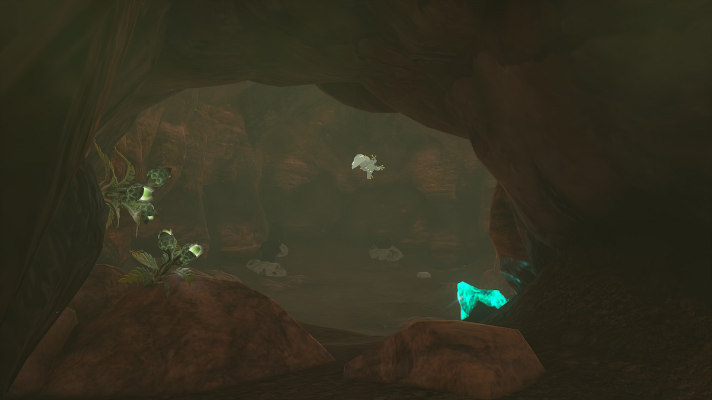
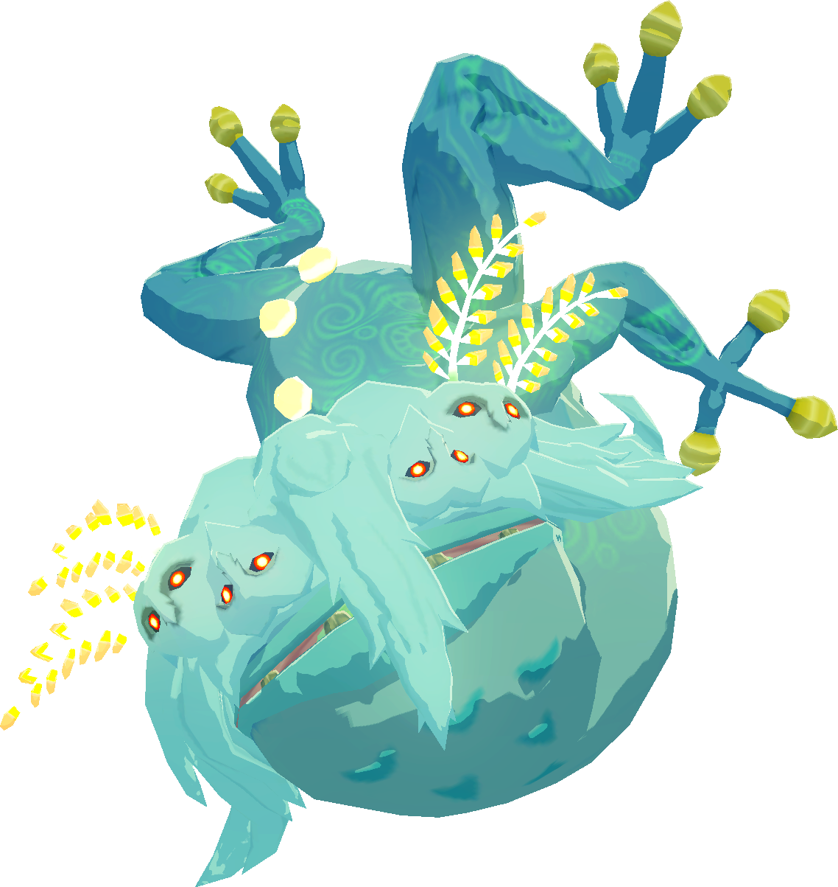
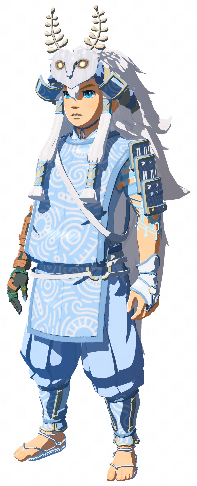

图：鲁皮湖边停着一只彩色气球，吉尔顿和柯尔天兄弟俩就在气球旁。
先说结论：给柯尔天一颗遗失物，换波克布林面罩
柯尔天一心想吃魔犹伊的遗失物变成萨托利。去鲁皮湖（中文攻略站常叫它皮科池塘）边找兄弟俩，进湖边的洞穴打一只魔犹伊，拿到 1 颗魔犹伊的遗失物交给柯尔天，他当场吃下，你拿到波克布林面罩。之后继续收集遗失物找柯尔天换东西，14 件常规奖励换完共需 46 颗。
| 阶段 | 要做的事 |
| 接取 | 鲁皮湖边（森林驿站旁），找吉尔顿和柯尔天 |
| 第一步 | 进湖边洞穴，打一只魔犹伊得 1 颗遗失物 |
| 第二步 | 把遗失物交给柯尔天，换波克布林面罩 |
| 之后 | 继续收集遗失物找柯尔天兑换，14 件常规奖励共需 46 颗 |
接取与奖励
| 项目 | 内容 |
| 接取 | 奥尔汀地区西南部，鲁皮湖边（森林驿站旁），找吉尔顿和柯尔天兄弟 |
| 奖励 | 波克布林面罩 |
第一步：去鲁皮湖边找柯尔天
从监视堡垒往东北走，过了森林驿站就是鲁皮湖，湖边停着一只彩色气球，吉尔顿和柯尔天兄弟俩就在气球旁。和吉尔顿说话，柯尔天会从洞穴里跑出来，说他想吃魔犹伊的遗失物变成萨托利。
第二步：进湖边洞穴打魔犹伊
进兄弟俩身后的洞穴，洞里就藏着一只魔犹伊，贴在洞顶或墙上。魔犹伊会不断移动，瞄准了用箭射它，打中后它会掉下来，留下一颗魔犹伊的遗失物，洞里还会飞出一只卢咪。用蝙蝠眼珠附魔的箭追踪着打，命中率高。

图：湖边洞穴里藏着一只魔犹伊，打倒它就能拿到遗失物。
第三步：把遗失物交给柯尔天
出洞把魔犹伊的遗失物交给柯尔天，他当场就吃下去了。可惜一颗不够变成萨托利，他说还得吃更多，然后就带着摊位出发去找更多遗失物。吉尔顿说他会去一始村，以后再想找柯尔天，先去一始村问吉尔顿。

图：魔犹伊就长这样，贴在洞顶或墙上，看到它就用箭射。
第四步：继续收集遗失物换珍藏品
之后每找到一只魔犹伊、拿到一颗遗失物，都可以找柯尔天换东西。兑换按固定顺序来，不能自选，换完 14 件常规奖励共需 46 颗：
| 顺序 | 奖励 | 本次要几颗 | 累计几颗 |
| 1 | 波克布林面罩 | 1 | 1 |
| 2 | 莫布林面罩 | 2 | 3 |
| 3 | 西诺克斯的指甲 ×3 | 2 | 5 |
| 4 | 精灵服 | 3 | 8 |
| 5 | 火蝙蝠的眼珠 ×8 | 3 | 11 |
| 6 | 蜥蜴战士面罩 | 3 | 14 |
| 7 | 吐雹蜥蜴战士的尾巴 ×5 | 3 | 17 |
| 8 | 精灵裤 | 4 | 21 |
| 9 | 白鬃莱尼尔的碎角 | 4 | 25 |
| 10 | 霍拉布林面罩 | 4 | 29 |
| 11 | 古栗欧克的翅膀 ×2 | 4 | 33 |
| 12 | 莱尼尔面罩 | 4 | 37 |
| 13 | 古栗欧克的雷电犄角 ×3 | 4 | 41 |
| 14 | 精灵头帽 | 5 | 46 |
换完 14 件常规奖励后，继续给柯尔天遗失物：全图共有 147 颗，全部集齐后，他并没有变成萨托利，而变成了一只卢咪，并送你一块柯尔天布料（滑翔伞花纹）。换完所有奖励后，再找柯尔天，他会告诉你还剩几只魔犹伊、大概在哪个方向。

图：精灵套是柯尔天摊位上的珍藏品，精灵服、精灵裤、精灵头帽要按顺序换。
关键信息表
| 项目 | 内容 |
| 接取地点 | 奥尔汀地区西南部，鲁皮湖边（森林驿站旁），找吉尔顿和柯尔天 |
| 遗失物来源 | 每个山洞里藏一只魔犹伊，打倒得 1 颗 |
| 第一件奖励 | 波克布林面罩（1 颗） |
| 常规奖励 | 14 件，换完共需 46 颗（精灵服累计 8 颗、精灵裤累计 21 颗、精灵头帽累计 46 颗） |
| 全图总数 | 147 颗，全部集齐另有柯尔天布料 |
容易翻车的地方
- 分不清兄弟俩——想吃遗失物的是柯尔天，告诉你柯尔天位置的是吉尔顿，别找错人。
- 遗失物不能自选——兑换按固定顺序来，想要精灵套得按顺序换到。
- 魔犹伊打不中——它会不断移动，用蝙蝠眼珠附魔的箭追踪着打。
- 洞里太暗看不见——带亮花种子或发光料理进洞。
一句话总结
去鲁皮湖边找柯尔天，进湖边洞穴打一只魔犹伊，给他一颗遗失物换波克布林面罩；之后继续收集遗失物，14 件常规奖励换完共需 46 颗。